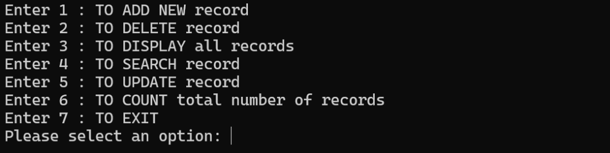
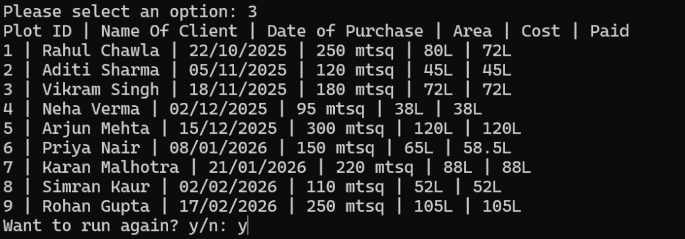

About This Project
This is a property management system created using Python. It stores property records in a binary file and provides options to add, update, delete, search, and display property details.
Source Code
import pickle
# Ensures the file exists
open("property_manage.dat", "ab").close()
# Read from file safely
def read_file():
f = open("property_manage.dat", "rb")
data = f.read()
f.close()
if data == b'':
return []
else:
return pickle.loads(data)
# Write to file
def write_file(data):
f = open("property_manage.dat", "wb")
pickle.dump(data, f)
f.close()
def main_menu():
print("\nEnter 1 : TO ADD NEW record")
print("Enter 2 : TO DELETE record")
print("Enter 3 : TO DISPLAY all records")
print("Enter 4 : TO SEARCH record")
print("Enter 5 : TO UPDATE record")
print("Enter 6 : TO COUNT total number of records")
print("Enter 7 : TO EXIT")
userinput = int(input("Please select an option: "))
if userinput == 1:
add_rec()
elif userinput == 2:
delete_rec()
elif userinput == 3:
disp_rec()
elif userinput == 4:
search_rec()
elif userinput == 5:
update_rec()
elif userinput == 6:
countrec()
elif userinput == 7:
exit()
else:
print("Invalid option")
def add_rec():
cust = read_file()
ans = 'y'
while ans == 'y':
plotid = int(input('Enter Plot ID: '))
name = input('Enter Name of Client: ')
date = input('Enter Date Purchased: ')
area = input('Enter Plot Area: ')
cost = input('Enter Plot Cost: ')
paid = input('Enter Money Paid: ')
cust.append([plotid, name, date, area, cost, paid])
ans = input('Want to enter more y/n: ')
write_file(cust)
def disp_rec():
cust = read_file()
if cust == []:
print("No records found.")
else:
print("Plot ID | Name Of Client | Date of Purchase | Area | Cost | Paid")
for e in cust:
print(f"{e[0]} | {e[1]} | {e[2]} | {e[3]} | {e[4]} | {e[5]}")
def search_rec():
cust = read_file()
if cust == []:
print("No records to search.")
return
en = int(input('Enter Plot ID to search: '))
found = False
for e in cust:
if e[0] == en:
print("Plot ID:", e[0], " Name:", e[1], " Date:", e[2],
" Area:", e[3], " Cost:", e[4], " Paid:", e[5])
found = True
break
if not found:
print("No such Plot ID")
def countrec():
cust = read_file()
print("Total number of records:", len(cust))
def delete_rec():
cust = read_file()
if cust == []:
print("No records to delete.")
return
en = int(input('Enter Plot ID to delete: '))
cust2 = []
for e in cust:
if e[0] != en:
cust2.append(e)
write_file(cust2)
print("Record deleted (if it existed).")
def update_rec():
cust = read_file()
if cust == []:
print("No records to update.")
return
en = int(input('Enter Plot ID to update: '))
found = False
for e in cust:
if e[0] == en:
name = input("Enter new Name of Client: ")
date = input("Enter new Date Purchased: ")
area = input("Enter new Plot Area: ")
cost = input("Enter new Plot Cost: ")
paid = input("Enter new Money Paid: ")
e[1] = name
e[2] = date
e[3] = area
e[4] = cost
e[5] = paid
found = True
break
if found:
write_file(cust)
print("Record updated.")
else:
print("No such Plot ID")
def main():
ans = 'y'
while ans == 'y':
main_menu()
ans = input('Want to run again? y/n: ')
main()
Screenshots

